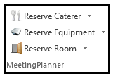

Quick Reserve/Features
Use “Quick Reserve” to reserve catering or equipment without a room. The feature is a short-cut to the ‘MeetingPlanner for Outlook’ room and resource reservation window as well.

Other Features
- The Pending Request feature allows designated room owners to deny or accept rooms requested by end users
- Enter room name and search from the ‘MeetingPlanner for Outlook’ reservation window to quickly find a room
- Manage to add resources to a reservation or for a summary of all resources attached to a reservation
- Down button to select the reservation to modify when multiple rooms and/or resources are reserved
- X to delete an entire reservation (to include the room and all resources)
- Load Recent to populate the search parameter data entered from the last reservation created
- Reset to clear the search parameter data entered
- Search from the ‘Manage’ window of an existing reservation to view and reserve additional available rooms
- Cancel to release a resource reservation at any time. (Subject, date, and time will remain populated.)
- Color Coding
Once a reservation is created, the color of the reservation window will change depending on the resource reserved:
- Room reservations are green
- Equipment reservation are purple
- Catering reservation are orange